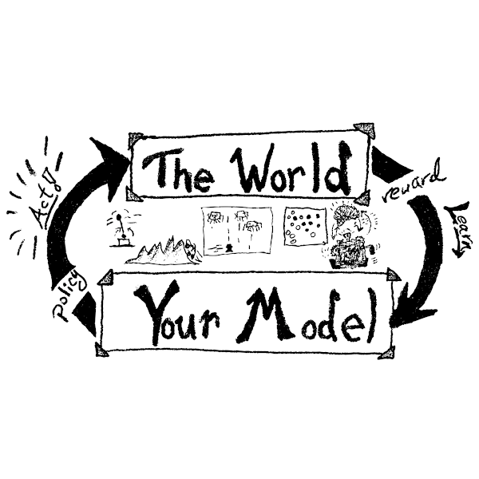

teaching
Courses being taught by Mark Crowley.
Data Analysis and Machine Learning (DKMA)
Engineers encounter data in many of their tasks, whether the sources of this data may be from experiments, databases, computer files or the Internet. There is a dire need for effective methods to model and analyze the data and extract useful knowledge from it and to know how to act on it. In this course you will learn the fundamental tools for assessing, preparing and analyzing data.
- Winter 2022: ECE 657A - Data and Knowledge Modeling and Analysis
- Spring 2021: ECE 657A - Data and Knowledge Modeling and Analysis
- Winter 2020: ECE 657A - Data and Knowledge Modeling and Analysis
Reinforcement Learning
One of my core research areas is into understanding the computational mechanisms that can enable learning to perform complex tasks primarily from experience and feedback. This topic, called Reinforcement Learning, has a complex history tying fields as diverse as neuroscience, behavioural and development psychology, economics and computer science. I approach it as a computational researcher aiming to build Artificial Intelligence agents that learn to way Humans do, not by any correspondence of their “brain” and it “neural” structure by the algorithms they both use to learn to act in a complex, mysterious world. 
- Spring 2022 : ECE 457C - Reinforcement Learning
- Note: this course was formerly known as ECE 493 Topic 42
- Spring 2021 : ECE 493 - Reinforcement Learning
- Spring 2020 : ECE 493 - Probabilistic Reasoning and Reinforcement Learning
- Spring 2019 : ECE 493 - Probabilistic Reasoning and Reinforcement Learning
Other Courses
See my department website for an archival list of courses I have taught.